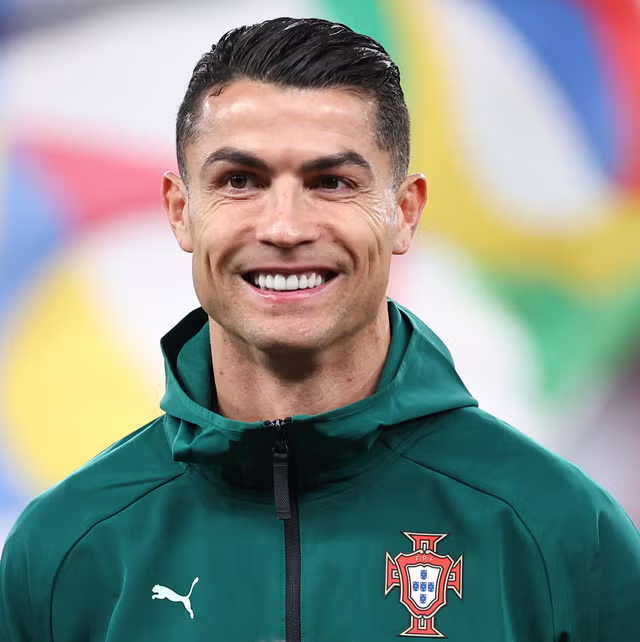

|  |
Personal Information
|
|
Cristiano Ronaldo was born as the fourth and youngest child. His life in the San Antonio neighborhood of Funchal was marked by financial struggles. His father, a kit man at local club Andorinha, and his mother, a cook, worked tirelessly to provide for the family. Ronaldo's obsession with football began at the age of seven. He was often found playing in the streets with makeshift balls. His talent was undeniable, but his journey was nearly cut short. At age 15, he was diagnosed with a "racing heart," a condition that could have forced him to give up football. After a successful laser surgery, he was back training within days, showcasing the elite mentality that would define his career. |
|
At just 12 years old, Ronaldo made a life-changing decision to leave Madeira and move to Lisbon to join Sporting CP's youth academy. It was a difficult period, characterized by homesickness and bullying due to his Madeiran accent. However, he focused all his energy on the gym and the pitch, physically transforming himself from a skinny teenager into a powerful athlete. |
Page 1 of 5